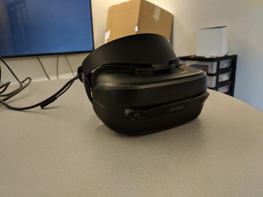
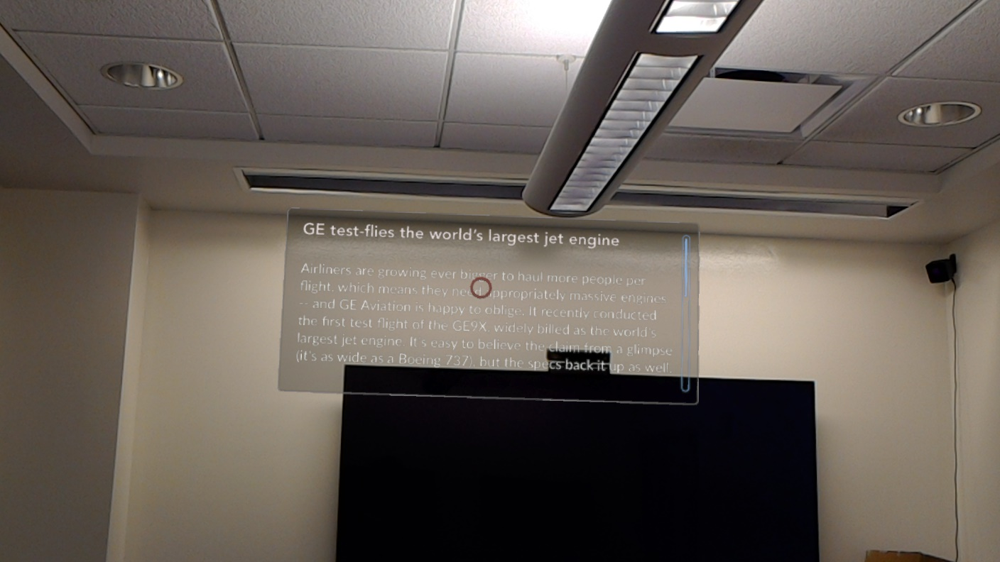

- Date: January 2018 - May 2018
- Role: AR & Voice Designer
- Work Setting: Individual
During my final semester of graduate school, I did an independent study at the Michigan Information Interaction Lab. For this project, I wanted to explore the field of augmented reality and what design implications the technology could bring to the world in the future. I decided to design a news application for a head-worn AR device, due to the clear need for such apps in the future, as well as the rich set of design challenges that news come with. I ended up trying out many different prototyping techniques and designing new methods to try and quickly iterate with AR prototypes. I scoped the project to explore how voice and augmented reality technologies can be used to enable people to get their news on the go.
People need to consume news for a variety of reasons, including staying informed, learning new things, and even entertainment. As our world is very busy, it is imperative that people still find time to get their news. I explored the state of the art technologies that could enable a modern way to consume news, while on the go. Variations of environments, sound and user preferences had to be accounted for and were critical for a compelling design.
I began this project by exploring various AR and VR applications. Some were news related, while others were from other contexts. Here are some of the apps that I looked into:
To get a sense of the technical capabilities of current devices (shown below). This exercise gave me good insights about the current state of the technology and what interactions I could support in a potential solution.
Microsoft Hololens
WMR Headset
HTC Vive
Google Daydream
To start flushing out my initial ideas, I sketched out a concept home screen redesign for a news app. I used the NYTimes as an example placeholder for the sketch concept.
{kind=link}
In order to further develop my prototypes, I looked up ways, where I could represent 3D space on paper. I found a template by Volodymyr Kurbatov, which helped me get some sense of spacing on a paper template. The prototypes have to be loaded in a 360 picture viewing app, such as GoPro VR Player.
{kind=link}
{kind=link}
To get more insights into how people consume their news, I conducted a survey. The survey was distributed via an email group at the University of Michigan, School of Information. In addition, the survey was shared on Facebook. Out of the 45 completed responses, 3 were removed, because they were invalid.
- Overall, respondents are satisfied with their primary news source.
- Ease of use, price and ability to get news on the goal are the categories where people are most satisfied with.
- Apps, online news websites and social media are top places where people get their news.
- Many people check the news multiple times a day.
- Most respondents do other activities, while getting their news. Drinking beverages and eating food are the top activities.
- Denser and breaking news tend to be consumed more in focus.
- Entertainment and local news tend to be consumed more, while multitasking. Voice outlined as an interface used while multitasking.
After extracting the insights from my survey, I constructed a persona that would represent my target audience. For my project, I decided to focus on users that read their news, while on the go. This drove me in the direction of pursuing a Voice-based service that also features augmented reality for richer interactions.
To try to iterate quickly on how a news app that featured voice and augmented reality interactions, I wrote up sample scripts for user scenarios in a document. The script included indicators for voice, AR, actors, and user actions. Though a "prototype" of this fidelity had many limitations, it helped me start to understand the design challenges I would need to solve and the use cases I need to think about.
{kind=link}
Since my research pushed me in the direction of Voice UX as a core part of the app, I developed a Voice prototype using the web service SaySpring.

Though SaySpring was great at creating a high-fidelity voice service, my design also featured augmented reality, in addition to voice. That led me to create a Sketch template that can help me represent voice and AR in the same prototype. My sketch AR + Voice prototyping templated is shown below, along with two sample screens.
{kind=link}
{kind=link}
{kind=link}
To give my prototypes a better feel of augmented reality, I used a 360 image of a room as a background. Though still opaque, the image created a more realistic feel of the user interface used in action.
Homepage

News list

Article

To make the prototypes interactive, I used Proto.io. The tool allowed me to allow gaze gesture interaction and let me load the app into a Google Daydream.

To make the app truly feel functional and high-fidelity, I created a prototype for the Microsoft Hololens. I used Unity to create a prototype that had the following features:
- True augmentation: the interface was overlaid on top of reality.
- Rich interaction: users could use select gestures to navigate the app.
- Voice input: users could also use voice commands.
- Voice output: in addition to being displayed, the news was also read to the user.
- User following: the screens were automatically rotated to always face the user.
{kind=link}
{kind=link}
Article
{kind=link}
{kind=link}
Demo video of hololens prototype
Throughout this project, i used research to learn about the challenges in delivering news, and explored the strengths and weaknesses of state of the art technologies in attempting to improve the experience of consuming news. Here are some of my learnings:
- User input is very challenging with a (first generation) Microsoft Hololens. Voice tunred out to be a much more appealing option for a number of user interactions.
- Both voice and augmented reality interfaces are very affected by the environment. Loud, outdoor places could be a challenge for both approaches.
- News comes in a great variety of shapes and forms. Quickly getting a headline requires a very different interface than an immersive lengthy piece of content.
- User research is challenging for emerging technologies, as people are not good at telling you what they want from technologies they have never used before.
- Learning how to use Unity to create Hololens apps has a steep learning curve. Unfortunately this left me with no time to do usability testing and add refinements to my prototype.